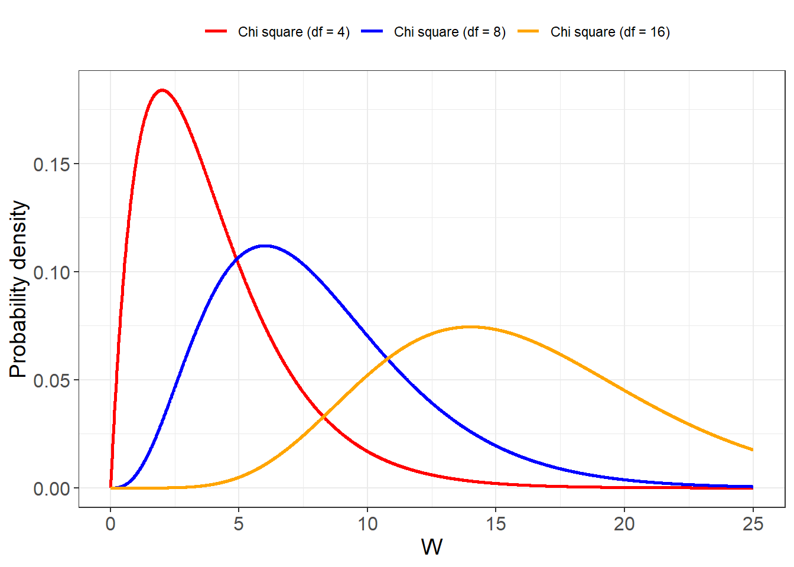

Chapter 10 Sampling distributions
When making predictions, the probabilities of the outcomes of an experiment are considered fundamental properties of the system or process under study. To carry out these predictions, we require a model and its parameters to fully specify the probability mass (or density) function that describes the propensities of the outcomes.
These parameters may be derived from the experimental design and the underlying theory supporting the experiment. However, when our goal is not just to make predictions but to test a theory or model, we must be able to estimate the parameters from experimental data and compare them to the theoretical values. It is also common to encounter situations where no established theory predicts the value of a parameter—particularly when it represents an unknown physical property of a system. In such cases, the primary objective is to estimate this parameter and draw conclusions based on its value.
As with probabilities, the parameters of a probabilistic model are abstract and unobservable, but they can be partially revealed through repeated experimentation.
In this chapter, we study the estimation of the mean and variance of normal distributions using random samples. These two quantities are the natural parameters of the normal distribution. The mean represents the expected value of the experiment and often directly corresponds to the physical property of interest—such as the mass or charge of the electron, or the longevity of a pacemaker. The variance, on the other hand, can reflect the uncertainty introduced by the experimental process itself (as in the case of J.J. Thomson’s measurements), or variability among observational units (such as patients in a clinical trial of pacemakers).
We will introduce the sample mean (average) and the sample variance as random variables used to estimate these parameters. Both the sample mean and the sample variance have their own probability density functions, known as sampling distributions. We will use these distributions to quantify how precisely we can estimate the mean and variance of the random experiment from data.
10.1 Random sample
Example (Electron’s charge to mass ratio)
In 1897, J. J. Thomson was the first to measure the charge-to-mass ratio (\(q/m\)) of electrons (Thomson 1897), demonstrating that they were the constituents of cathode rays and significantly smaller than hydrogen atoms. Although Thomson originally reported his results as the mass-to-charge ratio (\(m/e\)), here we present them as \(q/m\) values, expressed in units of \(Coulomb/Kg \times 10^{11}\), as illustrated below

We say that J. J. Thomson took a random sample of size 26, meaning he performed 26 independent repetitions of the random experiment: measuring the \(q/m\) ratio under varying experimental conditions.
The experiments were conducted using different types of gases, yet the observations appeared to cluster around a single unknown value.
Definition:
A random sample of size \(n\) is the repetition of a random experiment \(n\) independent times.
A random sample is an \(n\)-dimensional random variable:
\[(X_1, X_2, \dots, X_n)\]
where \(X_i\) is the random variable from i-th repetition of the random experiment that measures the \(q/m\) ratio, each subject to measurement error and with the same probability density function \(f(x)\) for all \(i\).
An observation of a random sample is the set of \(n\) values obtained from performing the experiment:
\[(x_1, x_2, \dots, x_n)\]
Example (Electron Measurement)
The observation of a sample of size \(26\) for the \(q/m\) ratio is a vector with \(26\) components:
(1.75, 2.94, 2.32, 3.12, 2.08, 2.50, 2.50, 2.85, 2.00, 2.50, 2.50, 2.56, 1.88, 2.12, 2.12, 1.88, 1.96, 1.85, 1.58, 1.88, 2.17, 1.63, 2.08, 1.11, 1.42, 1.00)
Clearly, the quantity \(q/m\) is a parameter of the physical system—an intrinsic property, a constant. However, the process of measuring this quantity—namely the random variable representing each specific experimental setup and the formulas used to compute the values—varied in each repetition, producing different outcomes due to measurement error or experimental noise.
J.J. Thomson did not directly observe the value of \(q/m\) but rather measurements—realizations of the random variables \(X_i\)—each subject to experimental variability, with the expected value of these measurements equal to \(q/m\). At the time, there was no theoretical model predicting its value. The experiments were exploratory, and knowledge emerged not from theory, but from empirical observation.
How did J.J. Thomson estimate the value of \(q/m\) from the data?
To move from raw measurements to a meaningful scientific conclusion, J.J. Thomson needed a systematic way to combine these varied observations into a single best estimate of the expected charge-to-mass ratio. In the next section, we will explore how statistical methods allow us to estimate unknown parameters from random samples like this one.
10.2 Parameter estimation
To find likely values for parameters, we use data. Therefore, we take a random sample—that is, we repeat the experiment \(n\) times, collect data, and use it to estimate the parameters.
Estimates of the Mean and Variance
Recall that for a discrete random variable, the mean (or expected value) is defined using the number of possible outcomes \(m\) and the probability mass function \(f(x)\):
\[ \mu = \sum_{i=1}^m x_i f(x_i) \]
This formula represents the center of mass of the probabilities, where \(f(x_i)\) is the probability of the outcome \(x_i\).
This concept is closely related to the sample average, which we define as:
\[ \bar{x} = \frac{1}{n} \sum_{i=1}^n x_i \]
Here, the \(x_i\)’s are the observed values in a random sample of size \(n\). We can also express this average as a weighted sum over the distinct observed values \(x_i\) with their associated relative frequencies \(f_i\) (i.e., the proportion of times each outcome appears in the sample):
\[ \bar{x} = \sum_{i=1}^m x_i f_i \]
If the relative frequencies \(f_i\) converge to the probabilities \(f(x_i)\) as \(n \to \infty\), then the average \(\bar{x}\) will converge to the mean \(\mu\). For finite \(n\), we treat the average as an estimate of the mean:
\[ \hat{\mu} = \bar{x} \]
Note that \(\hat{\mu}\) is not the same as \(\mu\). The value \(\hat{\mu}\) is a statistic—a quantity derived from the data—while \(\mu\) is a parameter, an inherent (but typically unknown) property of the underlying probability distribution. They are conceptually equal only in the limit as \(n \to \infty\), i.e., if we could repeat J.J. Thomson’s experiment an infinite number of times under identical conditions.
When the average is calculated from a small sample, we know it will contain some estimation error, which we will accept for now without quantifying.
Similarly, the variance of a discrete random variable is defined in terms of the probability mass function as:
\[ \sigma^2 = \sum_{i=1}^m (x_i - \mu)^2 f(x_i), \]
which represents the expected squared deviation from the mean.
From the observed values of a sample of size \(n\), we compute the sample variance as:
\[ s^2 = \frac{1}{n - 1} \sum_{i=1}^n (x_i - \bar{x})^2, \]
The use of \(n - 1\) will be explained later. If we express the sample variance in terms of the distinct values \(x_i\) and their relative frequencies \(f_i\), we obtain:
\[ s^2 = \frac{n}{n - 1} \sum_{i=1}^m (x_i - \bar{x})^2 f_i. \]
As the sample size \(n\) increases, the sample variance \(s^2\) converges to the variance \(\sigma^2\). Thus, we take \(s^2\) as an estimate of \(\sigma^2\) when working with finite samples.
Example (Electron)
We assume that the value obtained for the \(q/m\) experiment follows a normal probability density function.
\[X \sim N(x; \mu, \sigma^2)\] Where \(E(X)=\mu\) is the parameter \(\mu=q/m\).
the average of the sample is \(\bar{x}=2.09\)
Python: np.mean(x)
R: mean(x)and \(s^2=0.51^2=0.26\)
Python: np.var(x, ddof=1)
R: var(x)that we can take as the estimated values of \(\mu\) and \(\sigma^2\). So the fitted model is
\[X \sim N(x; \mu=2.09, \sigma^2=0.51^2)\]

The fitted distribution represents J.J. Thomson’s experiment with its mean and its variance. The sample average was not expected to exactly equal the value of \(q/m\), as it is subject to random error. Had he taken another sample, the average would likely have been different. By contrast, \(q/m\) appears to be a physical invariant with no associated dispersion. Today’s more accurate value of \(q/m\) is
\(q/m \sim \frac{1.602176634\times 10^{-19}}{9.1093837015\times 10^{−31}} C/Kg =\) \[1.758820024\times 10^{11} C/Kg\]
The error that J.J. Thomson’s made in his 1897 paper was \(0.33\times 10^{11} C/kg\), about \(18\%\) in relation to the current estimate.
Is this an expected error of his experiment? If he was to re-do his experiment how close to the current value of \(q/m\) he would typically be?
10.3 Law of Large Numbers
When we estimate parameters using data—for example, by using
\[
\hat{\mu} = \bar{x}
\]
as an estimate of \(\mu\), or
\[
\hat{\sigma}^2 = s^2
\]
as an estimate of \(\sigma^2\)—we know that we are introducing an error. If we were to take a different sample of \(q/m\) measurements (say, of size 24), the estimate would likely change, because the sample average \(\bar{x}\) depends on the data and is therefore variable.
This raises an important question:
When we perform an experiment, can we quantify how good our estimate of the parameter is?
The Sample Mean as a Random Variable
The first thing to recognize is that the numerical value we calculate, \(\bar{x}\), is just one observation of a random variable, which we denote by \(\bar{X}\).
Definition:
The sample mean (or average) of a random sample of size \(n\) is defined as: \[ \bar{X} = \frac{1}{n} \sum_{i=1}^n X_i \] Here, \((X_1, X_2, \dots, X_n)\) are independent and identically distributed (i.i.d.) random variables with mean \(\mu\) and variance \(\sigma^2\), and constitute the \(n\)-dimensional random variable of the sample.
The average \(\bar{X}\) is itself a random variable. For instance, in our sample of 24 measurements, we observed: \[ \bar{x} = 2.09 \] Had we taken another sample of size 24, the average would likely have been different.
Why Use \(\bar{X}\) to Estimate \(\mu\)?
The value \(\bar{x}\) can be used to estimate the unknown parameter \(\mu = q/m\) because is is an observation of the random variable \(\bar{X}\) with two very important and general properties:
Unbiasedness:
\[ E(\bar{X}) = \mu \]Consistency as \(n \to \infty\):
\[ lim_{n \to \infty} V(\bar{X}) = 0 \]
Demonstration of the Properties
Expected value of the mean: \[ E(\bar{X}) = E\left(\frac{1}{n} \sum_{i=1}^n X_i\right) = \frac{1}{n} \sum_{i=1}^n E(X_i) = \mu \] This holds because the \(X_i\) are i.i.d. random variables with expected value \(\mu\).
Variance of the mean: \[ V(\bar{X}) = V\left(\frac{1}{n} \sum_{i=1}^n X_i\right) = \frac{1}{n^2} \sum_{i=1}^n V(X_i) = \frac{\sigma^2}{n} \] Since the variance shrinks as \(1/n\), the sample mean becomes more stable as the sample size increases.
Estimating \(\mu\)
These two properties imply that \(\bar{x}\), the observed average, converges closer and closer to the value \(\mu\) as the sample size \(n\) increases.
This phenomenon is known as the law of large numbers. It holds regardless of the underlying probability distribution of the \(X_i\), provided they are independent and identically distributed with finite variance.
In other words:
The estimation error in using \(\bar{x}\) as an approximation for \(\mu\) decreases as \(n\) increases.
This is because the variability (variance) of \(\bar{X}\) decreases with \(n\).
So when we write: \[ \bar{x} = \hat{\mu} \] we understand that this estimate becomes increasingly reliable as the sample grows.
10.4 Inference
We know that when we take large samples, the estimation error tends to be small. However, for a given sample size \(n\), we would like to quantify how far our estimate might be from the parameter value. This gives us an idea of how accurate our estimate is. Specifically, we may ask:
What is the probability of making an error of a given size when estimating \(\mu\) with \(\bar{x}\)?
When we calculate probabilities related to an estimator, we are performing inference. Inference problems often involve questions such as:
- What is the probability that the estimate \(\bar{x}\) differs from the parameter \(\mu\) by no more than some margin \(m\)?
Mathematically, this is expressed as: \[ P(-m \leq \bar{X} - \mu \leq m) \] This represents the probability that the difference between the random variable \(\bar{X}\) (the sample mean) and the parameter \(\mu\) lies within a range of size \(2m\).
To calculate such probabilities, we need:
A probability model for \(\bar{X}\) (i.e., its probability distribution)
The parameters of that model (e.g., the mean and variance of the distribution)
What, then, is the probability distribution of \(\bar{X}\), and what about the distribution of \(S^2\) (the sample variance), so that we can calculate the relevant probabilities?
These probability functions are known as sampling distributions because they describe the behavior of statistics like \(\bar{X}\) and \(S^2\) when we take repeated samples. Understanding these distributions allows us to calculate their probabilities and make informed statements about how close our estimates are likely to be to the parameters.
Example (Electron)
We can pose an inference question based on J.J. Thomson’s experiment. the mean \(\mu\) is unknown, but the sample average from 24 repetitions is \(\bar{x} = 2.09\) (in \(10^{11} C/kg\) units). Assuming that each experimental measurement follows a normal distribution and that the standard deviation is approximately \(\hat{\sigma} = 0.51\), what is the probability that the sample mean \(\bar{X}\) lies within \(0.33\) of the mean \(\mu\)?
In other words, we want to find the probability that the sample mean is within a margin of error of \(0.33\) from \(\mu\):
\[ P(-0.33 \leq \bar{X} - \mu \leq 0.33) \]
To calculate this probability, we need to know the probability distribution of \(\bar{X}\).
10.5 Sample mean
Theorem: If the random variable \(X\) follows a normal distribution
\[ X \sim N(\mu, \sigma^2), \]
then the sample mean \(\bar{X}\) is also normally distributed as
\[ \bar{X} \sim N\left(\mu, \frac{\sigma^2}{n}\right). \]
This fits perfectly with the law of large numbers because:
- The mean of \(\bar{X}\) is exactly the parameter \(\mu\) we want to estimate:
\[ E(\bar{X}) = \mu, \]
- The variance of \(\bar{X}\) gets smaller as the sample size \(n\) grows:
\[ V(\bar{X}) = \frac{\sigma^2}{n}. \]
We say that \(\bar{X}\) is an unbiased estimator of \(\mu\), meaning that on average it hits the value—like a dart player who on average hits the bull’s-eye.
It is also a consistent estimator because as \(n\) increases, the variance (or “spread”) of \(\bar{X}\) gets smaller—like a dart player who improves their aim and gets closer to the bull’s-eye every time.
The quantity
\[ se = \sqrt{V(\bar{X})} = \frac{\sigma}{\sqrt{n}} \]
is called the standard error of the sample mean. It tells us how much we expect our sample mean \(\bar{x}\) to typically vary from the mean \(\mu\). Sometimes it is written as \(\sigma_{\bar{x}}\), to emphasize that it is the standard deviation of \(\bar{X}\).
Because \(\bar{X}\) is normal when \(X\) is normal, we can use the normal distribution to calculate probabilities related to \(\bar{X}\).
For example, suppose we want to find the probability that our estimate \(\bar{X}\) lies within a margin of error \(m\) from \(\mu\):
\[ P(-m \leq \bar{X} - \mu \leq m). \]
Using the fact that \(\bar{X} \sim N\left(\mu, \frac{\sigma^2}{n}\right)\), we can standardize this:
\[ P\left(-\frac{m}{\sigma/\sqrt{n}} \leq \frac{\bar{X} - \mu}{\sigma/\sqrt{n}} \leq \frac{m}{\sigma/\sqrt{n}}\right) = P(-z \leq Z \leq z), \]
where
\[ z = \frac{m}{\sigma/\sqrt{n}}, \]
and \(Z\) is a standard normal variable.
This allows us to calculate exactly how likely it is that our sample mean is close to the mean within the margin \(m\).
Example (Electron)
Suppose we want to know the probability that the sample mean \(\bar{X}\) is within a margin of error \(m = 0.33\) from the mean \(\mu\).
We assume the sample variance estimate \(\hat{\sigma} = 0.51\) is close to \(\sigma\), and we have a sample size \(n = 24\). (Later, Gosset corrected for small samples using the t-distribution, but for now we treat \(n=24\) as large enough.)
The standardized margin is
\[ z = \frac{0.33}{0.51 / \sqrt{24}} \approx 3.17. \]
The probability that the sample mean is within \(\pm 0.33\) of \(\mu\) is then
\[ P\left(-3.17 \leq Z \leq 3.17\right) = \Phi(3.17) - \Phi(-3.17) \approx 0.99, \]
where \(\Phi\) is the cumulative distribution function (CDF) of the standard normal distribution.
In code:
Python: norm.cdf(3.17) - norm.cdf(-3.17)
R: pnorm(3.17) - pnorm(-3.17)This means about 99% of the averages from repeated samples of size 24 would lie within 0.33 of the mean \(\mu\).
If we take the most recent and precise value of \(q/m \approx 1.75\) (in \(10^{11} C/kg\) units) as a better estimate to the mean, this tells us that most samples similar to J.J. Thomson’s would produce averages close to that value with a precision of about \(0.33\).
Note that the value of \(q/m\) is not directly observable and likely has infinite, unpredictable decimal places (i.e. is a normal number). What J.J. Thomson discovered was a consistent pattern in his measurements — a regularity that later researchers could replicate with increasing accuracy in other experiments.
10.6 Prediction
While some random experiments aim to infer a property of the system under study, others aim to make predictions about particular outcomes. However, if no theoretical knowledge is available about the parameters of the probabilistic model, these parameters must first be estimated—often by performing a large number of repetitions of the experiment.
10.6.1 Example: Pacemaker Prediction
The Micra Transcatheter Pacemaker is a miniaturized pacemaker delivered percutaneously with a high success rate. A key measure of its clinical efficacy is the prediction of minimum virtual battery longevity (VBL).
In an early study of 630 patients, the estimated battery longevity—based on usage conditions observed at 12 months—was 12.1 years, with 89% of patients projected to have a longevity of more than 10 years (corresponding to a standard deviation of \(1.71\)) (Duray et al. 2017).
Devices with projected longevity less than 5 years are unlikely to be marketed or adopted, especially for young or high-risk patients. Fortunately, none of the patients in this study had a projected longevity below 5 years.
Question: How can we compute the probability that a Micra pacemaker has a projected longevity of less than 5 years?
We assume the longevity of pacemakers follows a normal distribution:
\[ X \sim \mathcal{N}(\mu, \sigma^2) \]
To compute \(P(X \leq 5)\), we need values for the parameters \(\mu\) and \(\sigma^2\).
The reported mean is:
\[
\bar{x} = 12.1
\]
Python: np.mean(x)
R: mean(x)and \(s^2=1.71^2=2.9\)
Python: np.var(x, ddof=1)
R: var(x)that we can take as the estimated values of \(\mu\) and \(\sigma^2\). So the fitted model is
\[X \sim N(x; \mu=12.1, \sigma^2=1.71^2)\]

The probability that a patient is implanted with a pacemaker less than 5 years longevity can be computed using the cumulative distribution function of a normal distribution:
\[ P(X \leq 5) = F(5; \mu = 12.1, \sigma^2 = 1.71^2) = 0.00001 \]
Python: norm.cdf(5, 12.1, 1.71)
R: pnorm(5, 12.1, 1.71)That is, the estimated probability is about \(0.001\%\).
This provides a probabilistic argument supporting the adoption of the pacemaker, even for children and high-risk patients. As of 2025, it is estimated that 200,000 Micra devices have been implanted. Therefore, we expect only about 2 patients with pacemaker longevity under 5 years.
If such rare cases occur, they may be considered unfortunate but extremely low-probability events—comparable to or even lower than other everyday risks, such as dying in a car accident (roughly 1 in 100).
When inferring the parameters of a random experiment, we require as many repetitions as possible to produce reliable estimates. When parameters are entirely unknown, inferences from large studies are treated as the gold standard.
10.7 Validation
When the parameters of a random experiment have been estimated using random variables with reasonable distributional properties—such as clustering around the expected value—the stability of those estimates can be tested by performing a new set of experiments under different conditions. Repeated validation of parameters that represent properties of a system strengthens the notion that the property in question reflects a fundamental aspect of the system.
Example (Pacemaker Validation)
Random experiments are characterized by some experimental conditions. In the pacemaker study there are some inclusion and exclusion criteria, for example patients who are entirely pacemaker dependent were excluded for safety reasons. Pacemaker configuration can change for those patients. Imagine that we want to run a new study on 10 of those patients and measure the VBL for each of them. We then need to calculate the probability that the estimate we obtain for \(\mu\) in our new study is within a margin of error from the gold standard taken as true values \(\mu\) and \(\sigma^2\). We can compute, for instance, the probability that \(\bar{X}\) is within 1 year from \(\mu\).
Probability densities for \(X\) and \(\bar{X}\)
Remember that we have two probability functions:
The probability function of \(X\) that is also the probability function of the random experiment.
The probability function of \(\bar{X}\) that is probability function of the sample (a collection of independent random experiments).
Let us assume that the the longevity of the pacemakers is
\[X \sim N(\mu=12.1, \sigma^2=1.70^2)\]

In our new study, we plan to obtain a sample of \(10\) patients (like the blue crosses on the plot). Since \(X\) is normally distributed, the sample mean \(\bar{X}\) is also normally distributed. Therefore, we know the probability distribution of the sample mean \(\bar{X}\)
\[\bar{X} \sim N(12.1 , \frac{1.70^2}{10})\]

We can see that the outcomes of \(\bar{X}\) (like the black dot in the plot) will be more tightly concentrated around \(\mu\) than those of the random variable \(X\). In fact, when \(n\) is large, the sample means become so close to \(\mu\) and the distribution so sharply peaked that a single observed average (black dot) becomes a sufficiently accurate estimate of \(\mu\).
We want to calculate the probability that our estimate is within a margin of error of \(1\) year. That is, within a distance of \(1\) from the mean:
\(P(-1 \leq \bar{X} - 12.1 \leq 1) = P(11.1 \leq \bar{X} \leq 13.1)\)
Remember the standard error is: \(se=\frac{\sigma}{\sqrt{n}}=\frac{1.7}{\sqrt{10}}= 0.53\).
\[=\Phi(13.1; 14.1, 0.53)-\Phi(10.1; 14.1, 0.53)=0.93\]
Python: norm.cdf(14.1, 12.1, 0.53)-norm.cdf(10.1, 12.1, 0.53)
R: pnorm(13.1, 12.1, 1.7/sqrt(10))-pnorm(11.1, 12.1, 1.7/sqrt(10))We can, therefore, expect that \(93\%\) of the sample means from new studies with a sample size of 10 will fall within the interval \((11.1, 13.1)\), providing reassurance about the safety of the device for high-risk patients in our new study.
10.8 Sample Sum
Some random experiments consist of the collection of several identical trials, where the aim is to measure the combined contributions of each of them. Think, for example, of the collective effect of identical non-interacting molecules in a gas. In such cases, we may be interested in the sum of the outcomes of each experiment.
The sample sum is the random variable
\[ Y = n \bar{X} = \sum_{i=1}^n X_i \]
which is a function of the random sample \((X_1, \ldots, X_n)\).
10.8.1 Example (Cables)
Imagine that a client asks a metallurgical company to supply 8 cables that together can carry up to 96 tons—that is, 12 tons each. The engineer needs to guarantee that none of the cables will break when loaded with this weight.
In stock, there are cables, all produced under the same specifications, that might be suitable. So, the engineer selects 8 of these cables at random and loads each until it breaks. Here are the results (in tons):
13.34642, 13.32620, 13.01459, 13.10811, 12.96999, 13.55309, 13.75557, 12.62747
If the company intends to use all 8 cables simultaneously to carry a total of 96 tons, we should consider adding their individual capacities. The observed value for the sample sum is:
\[ y = 13.21268 \times 8 = 105.70144 \text{ tons} \]
What is the probability that when we put all the cables together, they can carry a total weight within 2 tons of the total expected weight that the cables can support?
Distribution of the sample sum
Theorem: if \(X\) follows a normal distribution \[X \sim N(\mu, \sigma^2)\]
then \(Y\) is normal
\[Y \sim N(n\mu, n\sigma^2)\]
and \(Y\) has
- mean \[E(Y)=n\mu\]
- variance \[V(Y)=n\sigma^2\]
As we have the distribution of \(Y\) we can compute probabilities on it.
Example (Cables)
If the breaking load of the cables have been previously certified to be a normal variable
\[X \sim N(\mu=13, \sigma^2=0.35^2)\]
then the sample sum of size \(8\) is normal
\[Y \sim N(n\mu=104, n\sigma^2=8\times 0.35^2)\]
with mean and variance
- \(E(Y)=n\mu=104\)
- \(V(Y)=n\sigma^2=8\times 0.35^2=0.98\); \(\sqrt{V(Y)}=0.9899495\)
The probability that when we put all the cables together, they can carry a total weight between \(102=104-2\) and \(106=104+2\) can be computed using the normal distribution function
\(P(102 \leq Y \leq 106)=\Phi(102; 104, 8\times 0.35^2)-\Phi(106; 104, 8\times 0.35^2)=0.956\)
We can calculate it as:
Python: norm.cdf(106, 104, 0.9899495)-norm.cdf(102, 104, 0.9899495)
R: pnorm(106, 104, 0.9899495)-pnorm(102, 104, 0.9899495)
Therefore, we can expect that \(95.6\%\) of the total weight that 8 cables can carry lies between \(102\) and \(106\) Tons, which represents a margin of error of \(2\) Tons around the total mean \(n\mu = 104\) Tons.
This probability is equal to the probability that a single cable breaks between \(13-\sqrt{2/8}\) and \(13-\sqrt{2/8}=13.25\) Tons.
The margin of error does not scale linearly with the number of cables; instead, it increases with the square root of the sample size, \(\sqrt{n}\). This is because the individual variations tend to cancel each other out when added—some cables break above the average strength, others below.
This slower growth of uncertainty ensures that collective measurements (like the total strength) become more accurate and reliable as the number of independent components increases, which is a fundamental principle of statistical inference.
10.9 Sample Variance
The variance is another key parameter of a random experiment. In some cases, it may reflect an intrinsic property of the system; in others, it may relate to the precision of the measurement process. When we estimate the variance of a random experiment using the observed value of the sample variance
\[ s^2 = \hat{\sigma}^2 \]
we are also introducing an estimation error. So how can we quantify the error we make?
Definition Just as we defined the sample mean \(\bar{X}\) as an estimator of the population mean \(\mu\), we now turn to estimating the population variance \(\sigma^2\).
The sample variance \(S^2\) of a random sample of size \(n\) is defined as
\[ S^2 = \frac{1}{n - 1} \sum_{i=1}^n (X_i - \bar{X})^2 \]
It measures the dispersion of the sample values around the sample mean \(\bar{X}\). The denominator \(n - 1\), rather than \(n\), ensures that \(S^2\) is an unbiased estimator of the population variance \(\sigma^2\). This correction, known as Bessel’s correction, accounts for the fact that we have used the sample mean \(\bar{X}\) — an estimate of \(\mu\) — in computing the deviations.
10.9.1 Example (Cables)
In a sample of \(8\) cables, the sample variance took the value:
\[ s^2 = \frac{1}{n - 1} \sum_{i=1}^n (x_i - \bar{x})^2 = 0.1275608 \]
The sample variance \(S^2\) is:
- Unbiased: Its expected value equals the true variance:
\[ E(S^2) = V(X) = \sigma^2 \] - Consistent: Its variance decreases as the sample size increases:
\[ V(S^2) \to 0 \quad \text{as} \quad n \to \infty \]
Therefore, \(S^2\) is both an unbiased and consistent estimator of \(\sigma^2\). This justifies using the observed sample variance \(s^2\) as an estimate of the true variance:
\[ s^2 = \hat{\sigma}^2 \]
Just like \(\hat{\mu} = \bar{x}\), the error in estimating \(\sigma^2\) with \(s^2\) gets smaller as \(n\) becomes larger.
Why Do We Divide by \(n - 1\)?
One might propose estimating \(\sigma^2\) using:
\[ S_n^2 = \frac{1}{n} \sum_{i=1}^n (X_i - \bar{X})^2 \]
However, this version is:
- Biased:
\[ E(S_n^2) = \sigma^2 - \frac{\sigma^2}{n} \neq \sigma^2 \] - but Consistent:
\[ V(S_n^2) \to 0 \quad \text{as} \quad n \to \infty \]
The bias appears because \(S_n^2\) measures the spread around the sample mean \(\bar{X}\), not the true mean \(\mu\). The error introduced when substituting \(\bar{X}\) for \(\mu\) contributes an extra variance term \(\sigma^2 / n\).
We correct for this bias by multiplying \(S_n^2\) by \(\frac{n}{n - 1}\):
\[ E\left( \frac{n}{n - 1} S_n^2 \right) = \sigma^2 \]
This gives us the corrected (unbiased) sample variance:
\[ S^2 = \frac{n}{n - 1} S_n^2 = \frac{1}{n - 1} \sum_{i=1}^n (X_i - \bar{X})^2 \]
which satisfies:
\[ E(S^2) = \sigma^2 \]
Example (Quality Control)
We encounter inference problems when we are interested in the probability of observing a certain value for the sample variance \(S^2\).
Consider a quality control process in which cables are expected to have breaking loads close to a specified target value \(\mu\). We want to avoid producing cables whose breaking strength varies too much from the mean.
Suppose we take a sample of 8 cables. If the sample variance is too high (specifically, \(S^2 > 0.3\)), we stop production and declare that the process is out of control.
What is the probability that the sample variance from a sample of 8 cables exceeds the threshold of \(0.3\)?
10.10 Distribution of the Sample Variance
Theorem: If \(X \sim N(\mu, \sigma^2)\), then the random variable
\[ W = \frac{(n - 1) S^2}{\sigma^2} \]
follows a chi-squared distribution with \(df = n - 1\) degrees of freedom:
\[ W \sim \chi^2(n - 1) \]
The probability density function (PDF) of the chi-squared distribution with \(n - 1\) degrees of freedom is given by:
\[ f(w) = C_n \, w^{\frac{n - 3}{2}} e^{-w/2} \]
where:
- \(C_n = \frac{1}{2^{(n-1)/2} \, \Gamma\left(\frac{n - 1}{2}\right)}\) is a normalizing constant to ensure \(\int_0^\infty f(w) \, dw = 1\),
- \(\Gamma(x)\) is the gamma function, a generalization of the factorial for real numbers.
If the value of \(\sigma^2\) is known, we can use the distribution of \(W\) to compute probabilities related to the sample variance \(S^2\).
10.11 The \(\chi^2\) Distribution
The chi-squared distribution has a parameter called the degrees of freedom \(df = n - 1\), which depends on the sample size. The shape of the distribution changes with different values of \(df\). The chi-squared distribution underpins the t-distribution used when inferring the mean with an unknown \(\sigma\) and small \(n\), as we see in the following chapter. Below, we explore how the probability density function behaves for different values of \(df\).

Example (Variations in Cable Strength)
If we know that our cables are certified as \[X \sim N(\mu=13, \sigma^2=0.35^2)\]
so
\[W=\frac{(n-1)S^2}{\sigma^2}= \frac{7S^2}{0.35^2} \sim \chi^2(n-1)\]
we can calculate \[P(S^2 > 0.3)=P(\frac{(n-1)S^2}{\sigma^2} > \frac{(n-1)0.3}{\sigma^2 } )\] \(=P(W > \frac{7\times0.3}{0.35^2})=P(W > 17.14286)\)
\(=1-P(W \leq 17.14286)\)
\(= 1- F_{\chi^2,df=7}(17.14286)=0.016\)
Python: 1-chi2.cdf(17.14286, df=7)
R: 1-pchisq(17.14286, 7)There is only a \(1\%\) chance of getting a value greater than \(0.3\). So \(s^2>0.3\) seems to be a good criteria to stop production and review the process.
Consider that sample of \(8\) cables that the engineer took was to perform a quality control test of the production line
13.34642, 13.32620, 13.01459, 13.10811, 12.96999, 13.55309, 13.75557, 12.62747
and the observed sample variance was \(s^2=0.1275608\). Therefore, the sample is not very dispersed because \(s^2 < 0.3\) and we believe that all is well and manufacturing is under control.
10.12 Questions
1) The sample mean is an unbiased estimator of the population mean because
\(\qquad\)a: The expected value of the sample mean is the population mean; \(\qquad\)b: The expected value of the population mean is the sample mean; \(\qquad\)c: The standard error approaches zero as \(n\) approaches infinity; \(\qquad\)d: The variance of the sample mean approaches zero as \(n\) approaches infinity;
2) Why is the statistic \(S^2=\frac{1}{n-1}\sum_{i=1}^{n}(X_i -\bar{X})^2\) used? instead of \(S_n^2=\frac{1}{n}\sum_{i=1}^{n}(X_i -\bar{X})^2\) to estimate the variance of a random variable?
\(\qquad\)a: because its variance is \(0\); \(\qquad\)b: because it is a consistent estimator of \(\sigma^2\); \(\qquad\)c: because it is an unbiased estimator of \(\sigma^2\); \(\qquad\)d: because it is the mean square distance to the sample mean (\(\bar{X}\));
3) What is the variance of the sample mean \(\bar{X}=\frac{1}{n}\sum_{i=1}^n X_i\)?
\(\qquad\)a:\(\sigma\); \(\qquad\)b:\(\frac{\sigma}{\sqrt{n}}\); \(\qquad\)c:\(\sigma^2\); \(\qquad\)d:\(\frac{\sigma^2}{n}\);
4) What is the mean and variance of the sample sum?
\(\qquad\)a:\(\mu\), \(n\sigma\); \(\qquad\)b:\(n\mu\),\(n\sigma\); \(\qquad\)c:\(\mu\), \(n\sigma^2\); \(\qquad\)d:\(n\mu\), \(n\sigma^2\);
5) An inference question requires to
\(\qquad\)a: calculate the expected value of an estimator; \(\qquad\)b: estimate the value of a parameter; \(\qquad\)c: calculate a probability of an estimator; \(\qquad\)d: fit a probability model;
10.13 Exercises
10.13.0.1 Exercise 1
Imagine that in the cable example the client asks to sell them one cables that can carry \(12\) Tons.
The engineer takes \(8\) sample of cables in stock at random, and load them until they break with the results
13.34642, 13.32620, 13.01459, 13.10811, 12.96999, 13.55309, 13.75557, 12.62747
If he does not know the certified breaking load, but he assumes that it is a normal variable, is it reasonable to sell one cable from the stock? (A: \(P(X<12)=0.0003\)).
10.13.1 From Estimation to Inference
So far, we have seen how to use a sample to estimate population parameters such as the mean and variance. But these so called point estimates alone are not enough. Scientific conclusions require an understanding of how reliable those estimates are. This leads us to inference questions such as:
- How precise is our estimate?
- What range of values is consistent with the data?
- Could the observed estimate have occurred by chance?
In the following chapters, we explore how the sampling distributions of estimators form the basis for answering these questions through confidence intervals and hypothesis tests.
10.13.1.1 Exercise 2
An electronics company manufactures resistors that have an average resistance of 100 ohms and a standard deviation of 10 ohms. The resistance distribution is normal.
What is the sample mean of \(n=25\) resistors? (R:100)
What is the variance of the sample mean of \(n=25\) resistors? (R:4)
What is the standard error of the sample mean of \(n=25\) resistors? (R:2)
Find the probability that a random sample of \(n = 25\) resistors have an average resistance of less than \(95\) ohms (R: 0.0062)
10.13.1.2 Exercise 3
A battery model charges an average of \(75\%\) of its capacity in one hour with a standard deviation of \(15\%\).
If the battery charge is a normal variable, what is the probability that the charge difference between the sample mean of \(25\) batteries and the mean charge is at most \(5\%\)? (R:0.9044)
If we charge \(100\) batteries, what is that probability? (R:0.9991)
If instead we only charge \(9\) batteries, what charge \(c\) is exceeded by the sample mean with probability \(0.015\)? (A:85.850)
10.13.1.3 Exercise 4
On January 28, 1986, the space shuttle Challenger exploded just seconds after launch, killing all seven crew members. The night before, concerns were raised about the potential damage that the low temperature forecast at launch time—\(29°F\) (\(–1.6°C\))—could cause to two rubber O-rings that sealed sections of the solid rocket boosters. The failure of engineers to properly analyze available data, combined with pressure to avoid further delays in the mission, contributed to the disaster.
Engineers had access to data from previous shuttle launches where damage to the O-rings and they the temperatures on the days of those launches were recorded (Tufte 1997). Crucially ignoring the severity of the the damage and the launches with no damage, some arguments against delaying the mission were based on the temperatures of the launches with some damage only.
These are the the temperatures of the launches that registered some damage
53, 57, 58, 63, 70, 75
What is the probability that a launch with some damage is observed at temperature \(29°F\)? (A: \(P(X< 29)=3.10\times 10^{-5}\)).